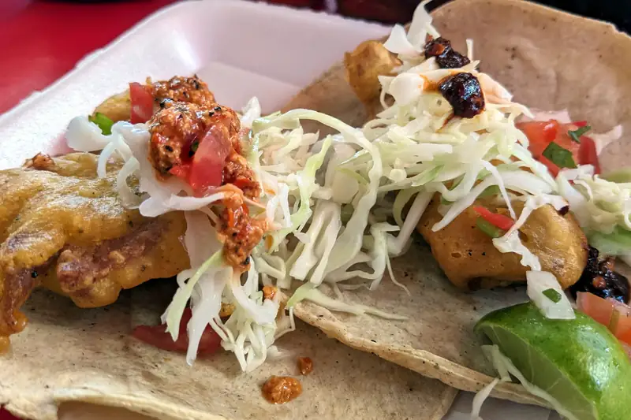
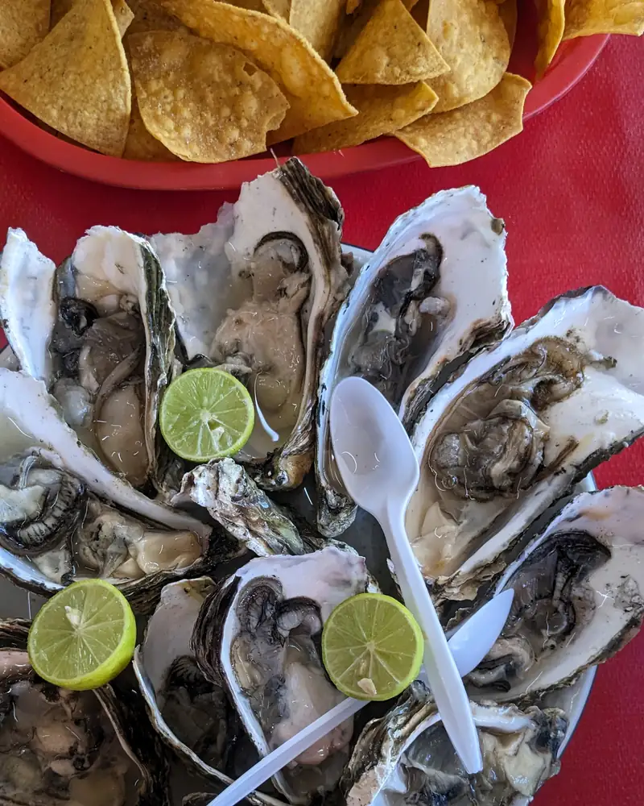
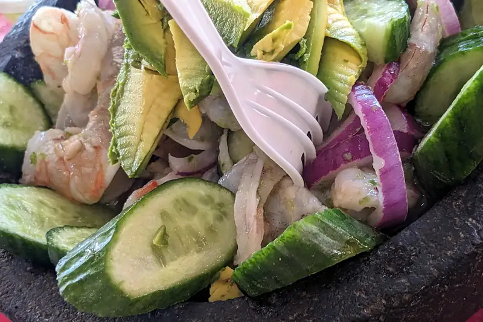
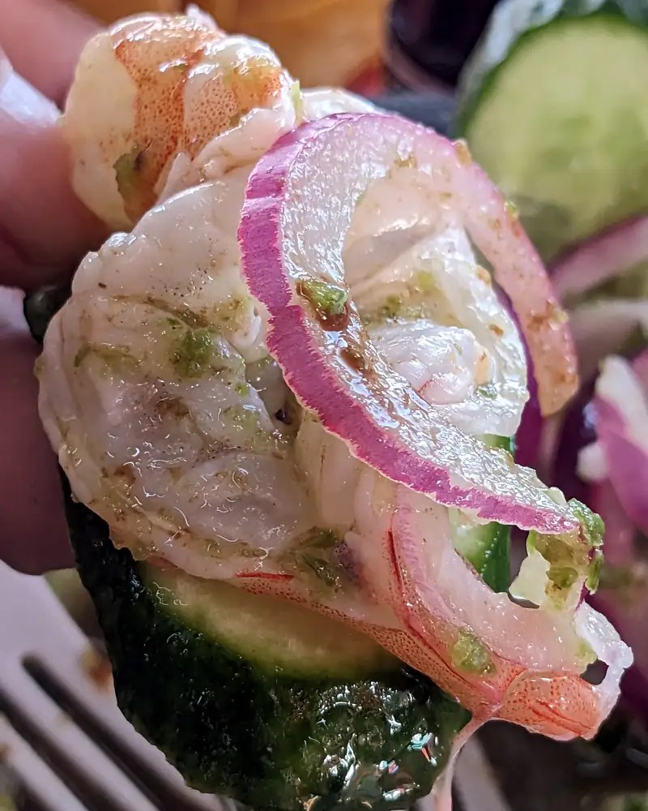
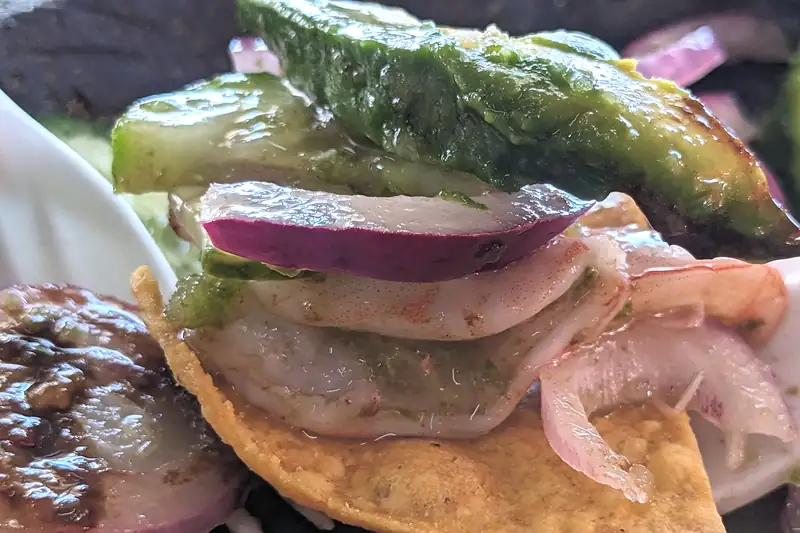

Mariscos El Meño
Érase una vez que era Lunes (o Martes) y nuestro lugar favorito para comer mariscos estaba cerrado, así que optamos por una de las recomendaciones que nos dieron nuestros parientes y llegamos aquí: Mariscos El Meño. Tienen todo lo típico de un changarrito de mariscos y en esta ocasión, como íbamos más, nos animamos a pedir la docena de ostiones en su concha... eau.. maaay...
Claro que empezamos con unas rondas de tacos de pescado y de camarón
 {kind=link}
Y como ya dije, pedimos ostiones en su concha que bueno, vamos aclarando, no son como en las fotos de instagram, aquí son "deadeveras", todos son de forma diferente, de tamaño diferente, pero créeme... frescos y locales
 {kind=link}
Y ps ahí nom'as como pro-tip empieza por comerte el que más parezca vaso/plato hondo y usa ese para preparar los demás. No este no es de los lugares que tengan algún mignonette o alguna salsa con inspiración asiática, no... aquí se aderazan los ostiones al gusto, con limón, salsa de botellita, que bien puede ser habanero, salsa negra (de las que tienen como jugo maggi) o de las salsas que preparan en el lugar. En mis tiempos, cuando no había de otras, era limón y tabasco y ya párale de contar... tal vez salsa soya, pero ahora? .. uufff.. salsa amor, valentina, de las castillo con o sin jugo maggi.. el limón no debe faltarle, pero pues, dependiendo con cuántos estés compartiendo la docena, tienes entre 3 y 6 oportunidades para experimentar y encontrarle el punto juuuuuuusssto para esos ostiones.
{kind=link}
De lo típico, pero no tan típico, también tienen molcajetes, o a veces llamados volcanes, como este con camarones

{kind=link}
Y el aguachile? ouuuutamadre.. también, te armas tu tostada (o totopo) con las antes mencionadas salsas para que

{kind=link}
cada bocado sepa exactamente como quieres

{kind=link}